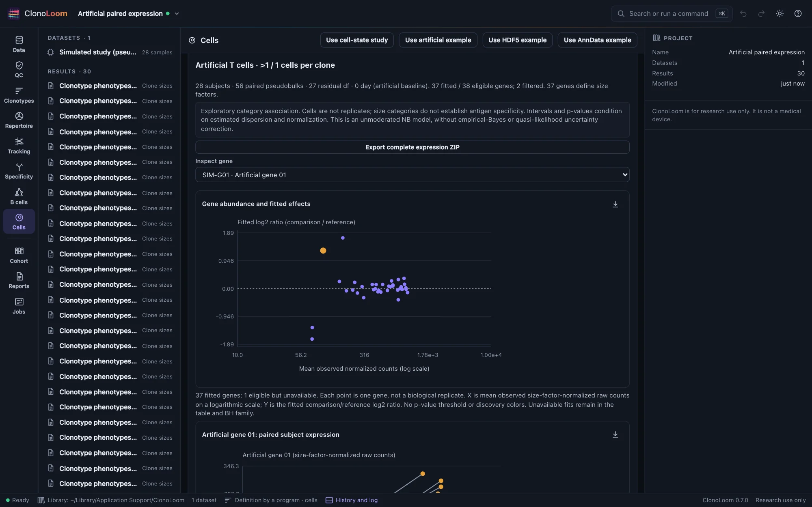
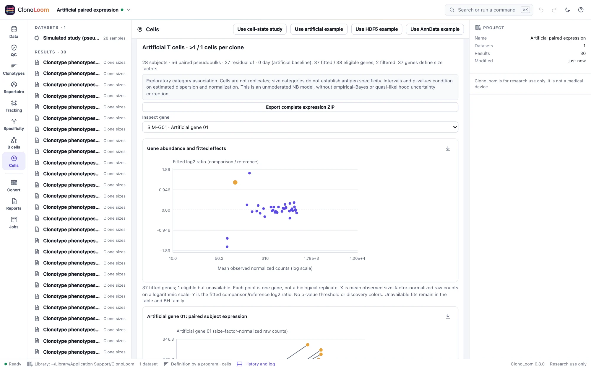
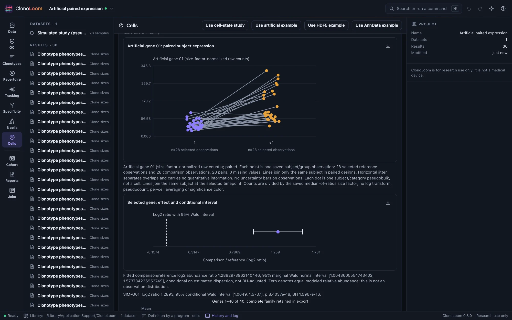
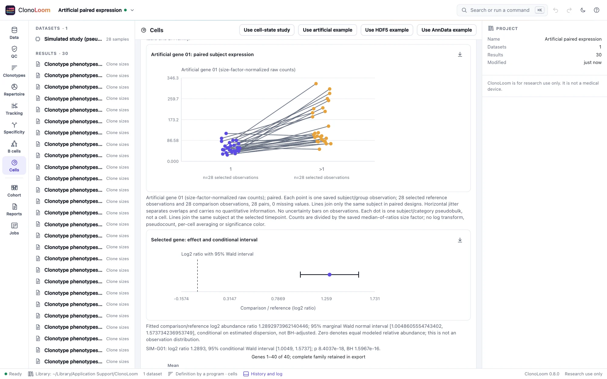

Pseudobulk differential expression
Compare two receptor-size categories within subjects at one timepoint and supplied cell type. Inspect effects, subject observations and conditional uncertainty together.
Declare the comparison
- Save pseudobulk count evidence with the same receptor definition, QC, supplied cell-type column and size breakpoints across samples.
- In Cells → Pseudobulk differential expression, choose that saved count result. Explicitly choose the supplied type, literal timepoint, reference category and comparison category.
- Record any whole-sample exclusions with reasons. Every included subject must have both categories above the parent's minimum cell count and a positive raw library. Absent or low-cell groups cause refusal; no subject is silently dropped.
- Choose the raw count/prevalence filter before inspecting effects, then select Compare pseudobulk expression.
This bounded, unmoderated model requires 25–32 complete subject pairs: 50–64 pseudobulk observations, with one sample per subject at the chosen timepoint. It does not combine visits, samples or tissues, or treat cells as independent subjects. Twenty-five pairs is a numerical/approximation guard for this implementation, not a power recommendation. The four-subject count-evidence example is intentionally too small.
Read the effects with their observations


The horizontal axis is mean size-factor-normalized count, on a logarithmic scale; the vertical axis is the fitted comparison/reference log2 expression ratio. Zero means equal modeled relative expression. Failed eligible fits and filtered genes stay in the table and complete export. Gene IDs remain distinct even when names coincide.


Observed counts are divided by the saved size factor, with no pseudocount or per-cell average. The separate interval describes the fitted log2 ratio, not the distribution of observations. Its confidence level is marginal and conditional on estimated dispersion and size factors; BH does not adjust the interval. Neither a small p-value nor a size category proves antigen specificity, proliferation or causality.
What the model estimates
The design has an intercept, a comparison indicator and one fixed-effect column for each subject except the reference subject. The contrast targets the category coefficient. The full design, contrast, residual degrees of freedom, raw libraries, cell counts, size factors and offsets are inspectable and exported. Subject-constant effects are blocked, but category-specific confounding is not resolved. The saved count parent has no separate category-specific batch covariate.
Median-of-ratios normalization follows Anders and Huber: for each gene positive in every selected pseudobulk, divide its count by its across-observation geometric mean; take the median ratio in each observation, then center factors to geometric mean one. ClonoLoom requires at least ten qualifying genes and records their IDs. This reference set is computed before the gene filter. Zero-containing genes remain in raw counts and can be tested, but do not estimate factors. There is no pseudocount fallback. The normalization assumes most reference genes are unchanged or changes are balanced; global RNA changes, poor reference panels and composition effects can invalidate that interpretation.
Raw counts use an NB2 log-link model, variance = mean + dispersion × mean², with log size-factor offsets. Each gene has a separate Cox–Reid adjusted-profile dispersion estimate. Nested full/null likelihoods at that fitted dispersion give an asymptotic one-degree-of-freedom likelihood-ratio test. Marginal normal Wald intervals use the fitted information matrix. Dispersion search boundaries, all-zero subject blocks/categories, ill-conditioning and nonconvergence remain explicit unavailable fits. No Poisson fallback, subject deletion or ridge is used to force a result.
This is ClonoLoom's unmoderated implementation using the established count-model engine. It does not implement empirical-Bayes dispersion moderation, quasi-likelihood, effect shrinkage, the full edgeR pipeline or DESeq2. It does not fully propagate dispersion or normalization uncertainty. Small or heterogeneous studies can need other models. The complete raw count matrix is available for those analyses.
Filtering and multiplicity
The defaults require at least 10 raw counts in at least 25 selected pseudobulk observations; these are observations, not 25 subjects in each category. The filter ignores effect direction and p-values. At most 1000 eligible genes can be fitted; larger requests are refused, not truncated. Up to 50,000 genes are retained within the count parent's two-million group × feature slot bound.
BH covers every count/prevalence-eligible gene for this one type, timepoint and contrast. Failed eligible fits occupy p=1 family slots, while their displayed p and adjusted p stay unavailable. Filtered genes are outside the family. BH requires independence or suitable positive dependence; it does not cover other comparisons, cell-type definitions, thresholds or exploratory choices. Expression-defined cell labels and receptor-size selection may introduce selection bias.
Artificial positive and null controls
Open Paired pseudobulk expression study or Null pseudobulk expression study. Save all 28 paired TRA/TRB phenotype results with annotation cell_type, receptor-population sizes and breakpoints 1. Aggregate with minimum 10 cells, then compare Artificial T cells at the displayed literal baseline timepoint (0 day (artificial baseline) in the generated metadata), reference 1, comparison >1.
Each subject has 48–52 singleton clones and eight larger clones of uneven sizes. Forty fictional genes have shared subject/gene and category/gene gamma rates followed by Poisson cell counts; this creates subject-level pseudobulk variation. Two genes increase threefold and two decrease threefold in the positive preset. The null preset has no generating category effect. Low-count, zero-gene and zero-subject controls exercise missing inference. Supplied Gaussian coordinates are illustrative clouds, not an embedding. Full generating rates, assignments, raw sums and hashes are in truth/.
Independent NumPy/SciPy/statsmodels references check normalization, fitted values, likelihoods, covariance, intervals and BH. A separate prespecified 300-gene control panel yielded 15 nominal p≤0.05 results among 267 fitted null genes (5.6%), with 250 conditional intervals covering zero (93.6%); all 30 positive controls had the correct direction. This finite constructed panel, sharing normalization factors, is not a universal calibration or power guarantee.
Save and export
The immutable result pins its count-parent checksum and contains every raw group, annotation and disposition. New comparisons need the checked count artifact but no original expression files. Saved results replay without parents or sources. The ZIP includes the result, manifests, all raw evidence, every selected raw gene count, the design and offsets, the complete gene table and provider NOTICE. Figures retain methods and citations. Remote control uses compare_pseudobulk.
Methods and sources
- Crowell et al. (2020), muscat and OSCA Multi-Sample, chapter 4: replicate-aware pseudobulk analysis. OSCA's moderated quasi-likelihood workflow differs from this implementation.
- Anders and Huber (2010): median-of-ratios normalization.
- McCarthy, Chen and Smyth (2012): negative-binomial GLMs and Cox–Reid dispersion.
- Benjamini and Hochberg (1995): false discovery rate correction.